Screenshot compare
Real ndev browser viewport captures, 1440×900, 2026-08-14. Same JobKit v0.10.1 facts. Scores live in SCORECARD.md. Live sites: hub.html.
Homes
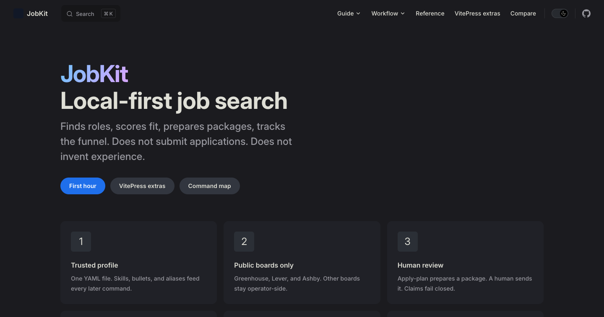
VitePress :4323 · 8.8
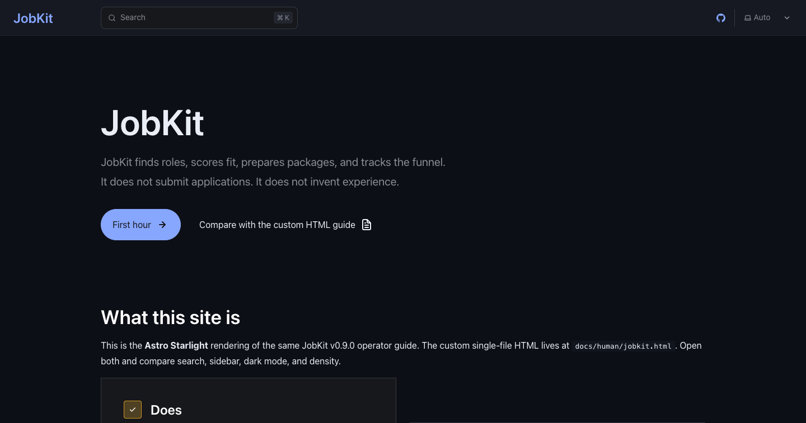
Starlight :4322 · 8.3
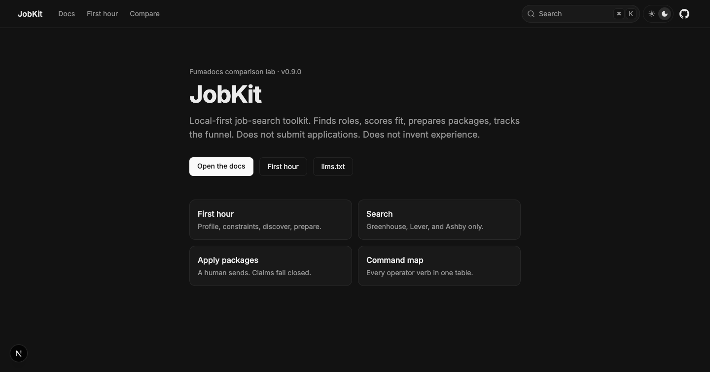
Fumadocs :4326 · 8.1
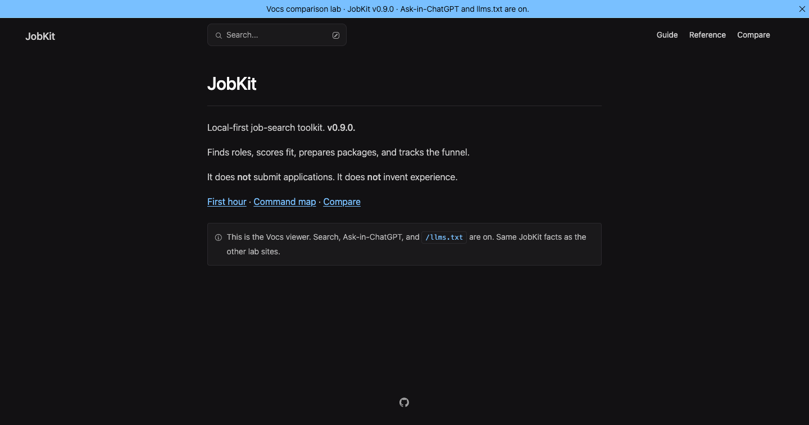
Vocs :4327 · 7.8
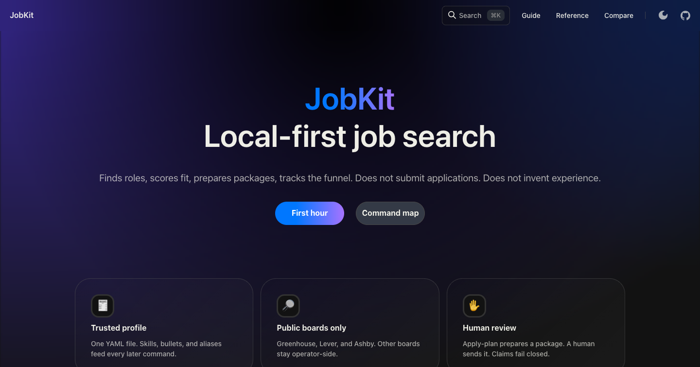
Rspress :4328 · 8.5
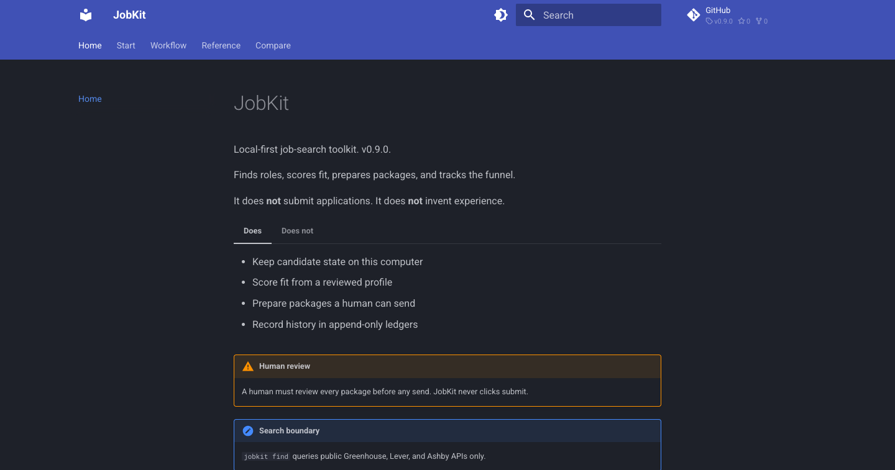
MkDocs Material :4325 · 7.4
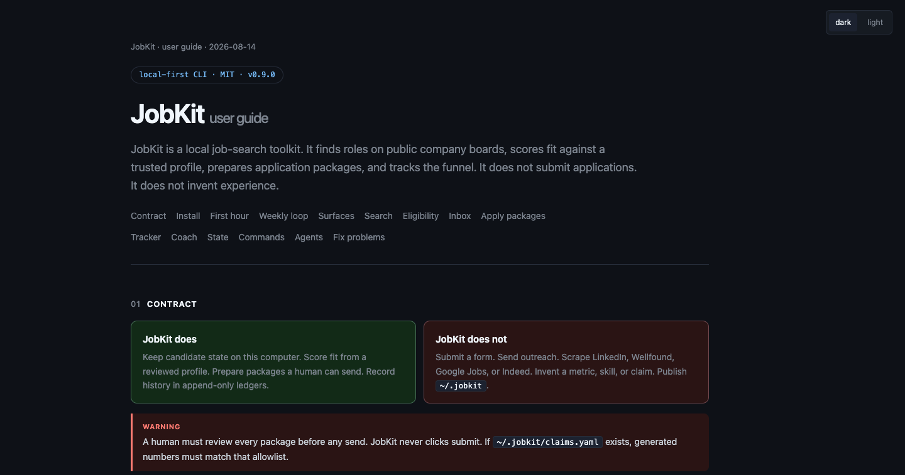
Custom HTML file · 7.0
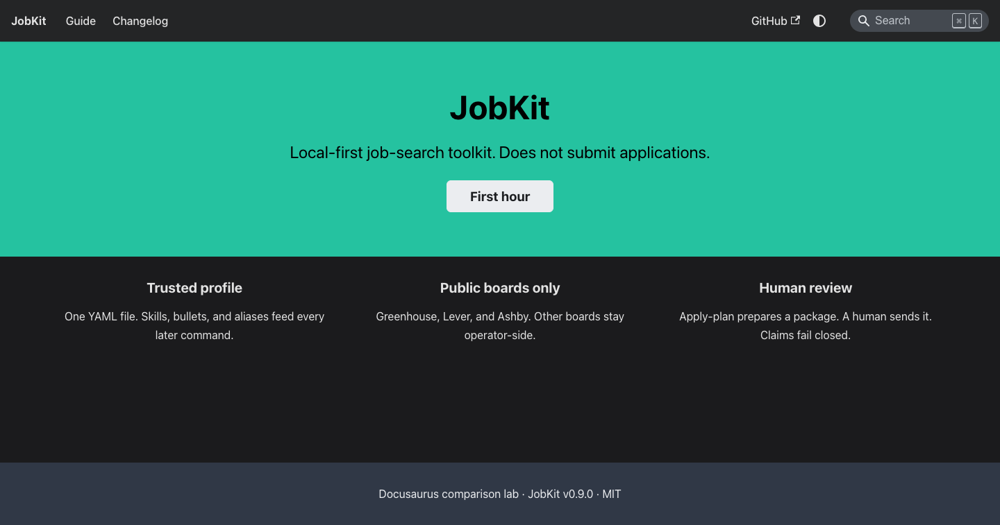
Docusaurus :4324 · 5.8
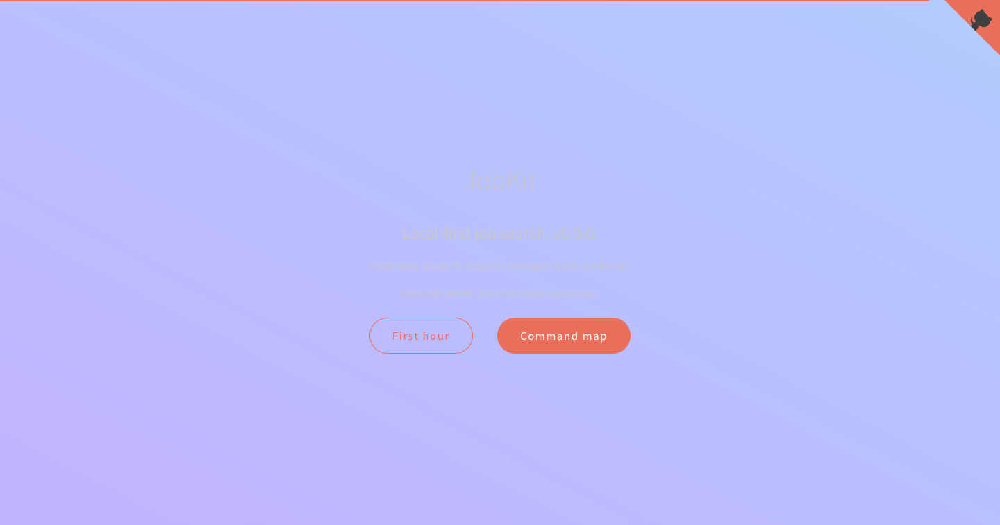
Docsify :4329 · 5.2
First hour
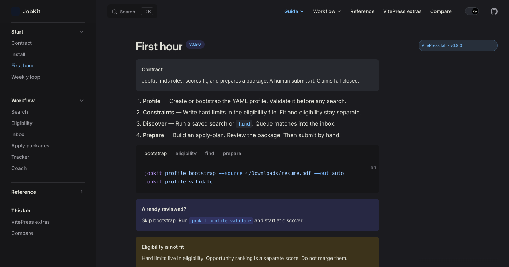
VitePress — badges, code groups, containers, theme slot
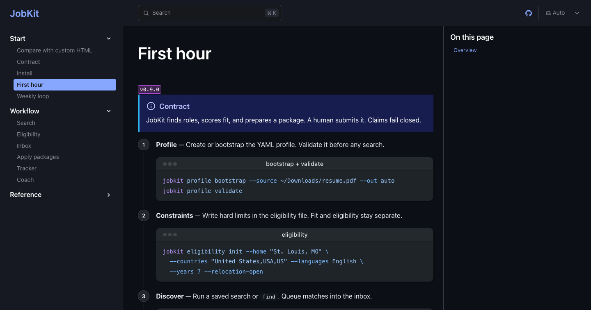
Starlight — cleanest default docs chrome
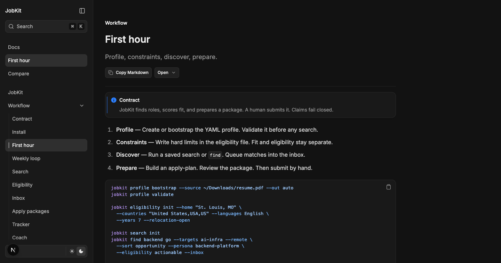
Fumadocs — Copy Markdown + Open + callouts
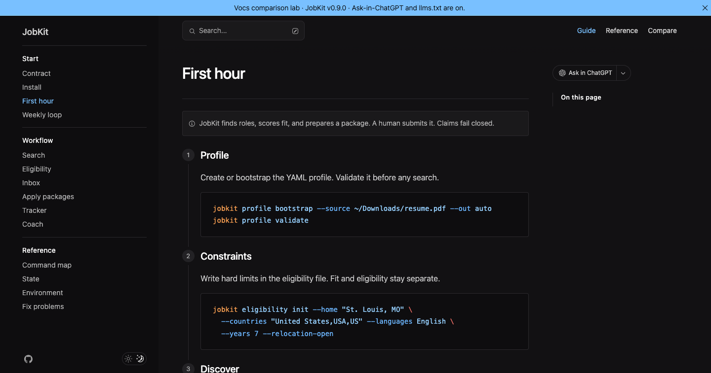
Vocs — numbered steps + Ask in ChatGPT
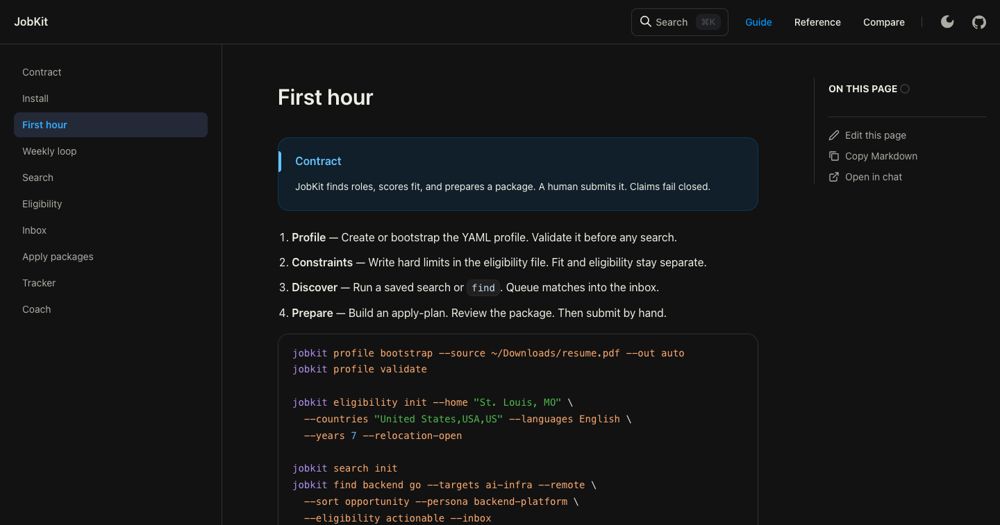
Rspress — edit / copy / open-in-chat in the outline
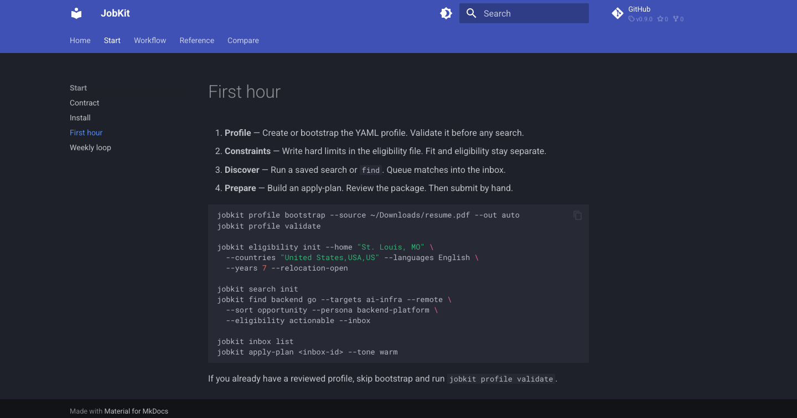
MkDocs — instant nav, copy button, dated chrome
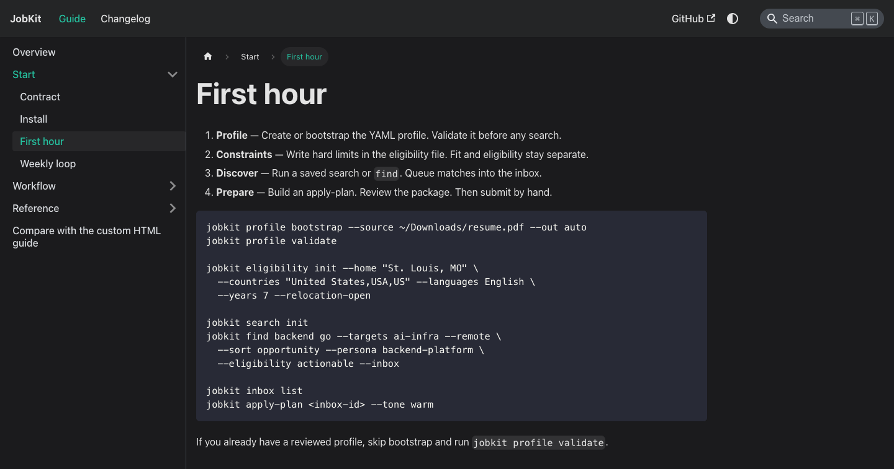
Docusaurus — breadcrumbs, generic Infima
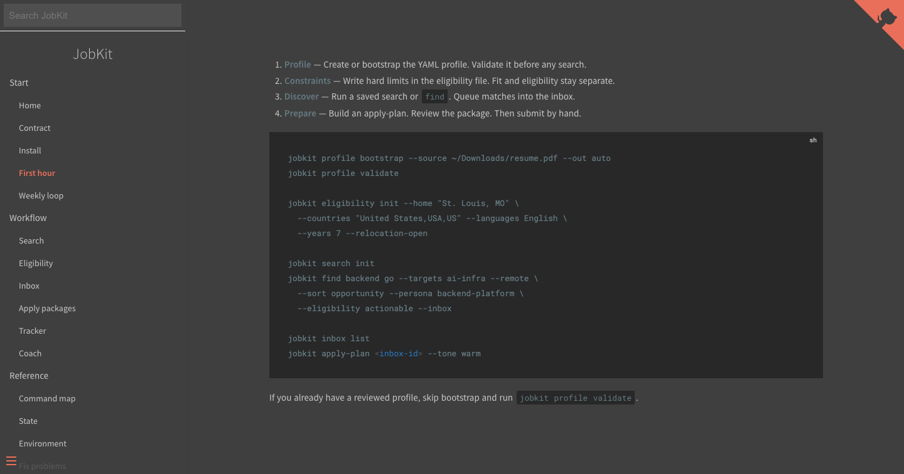
Docsify — no-build, dated chrome
VitePress extras
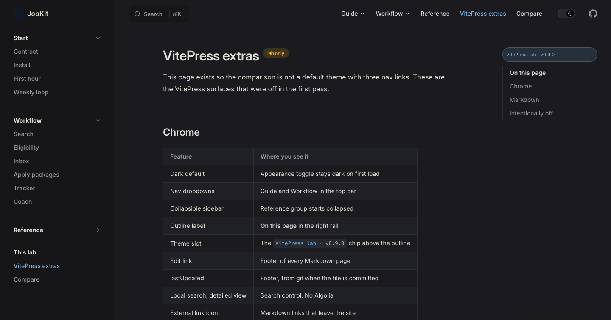
VitePress extras — the features turned on after the first lab pass